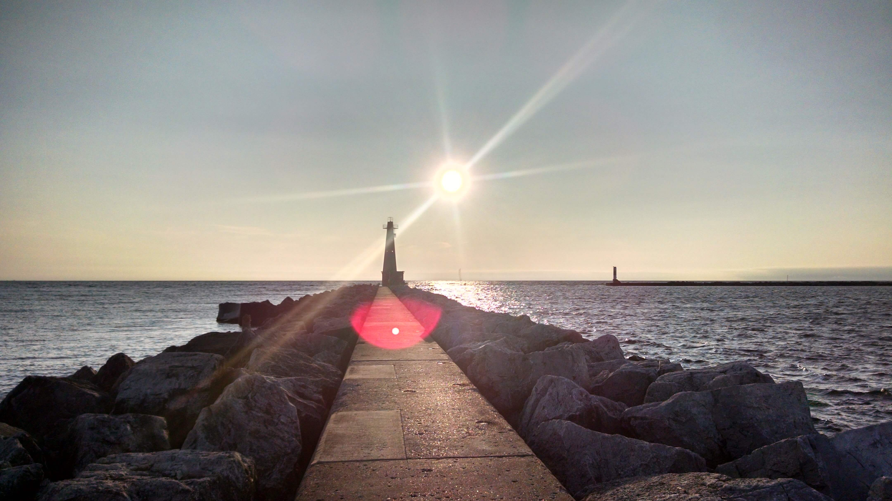
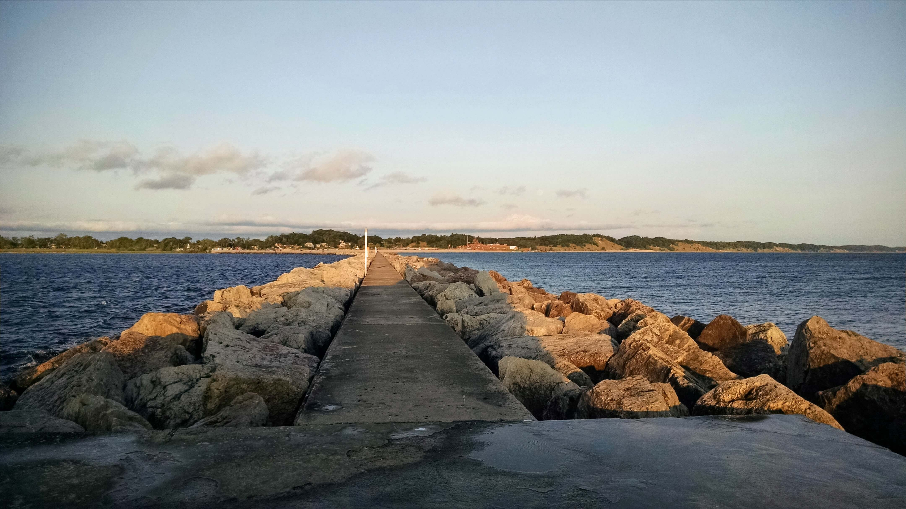
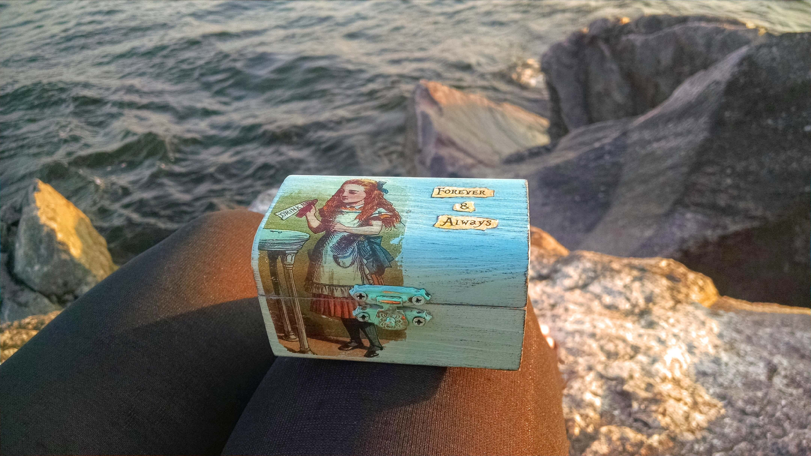
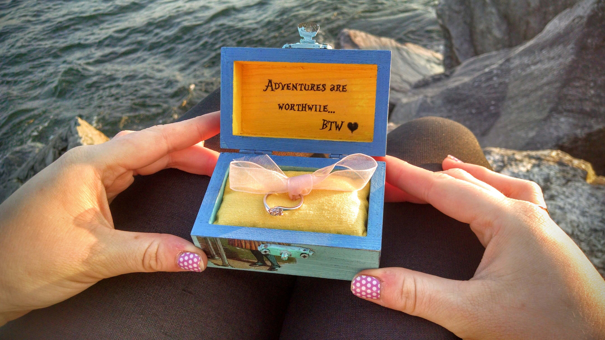
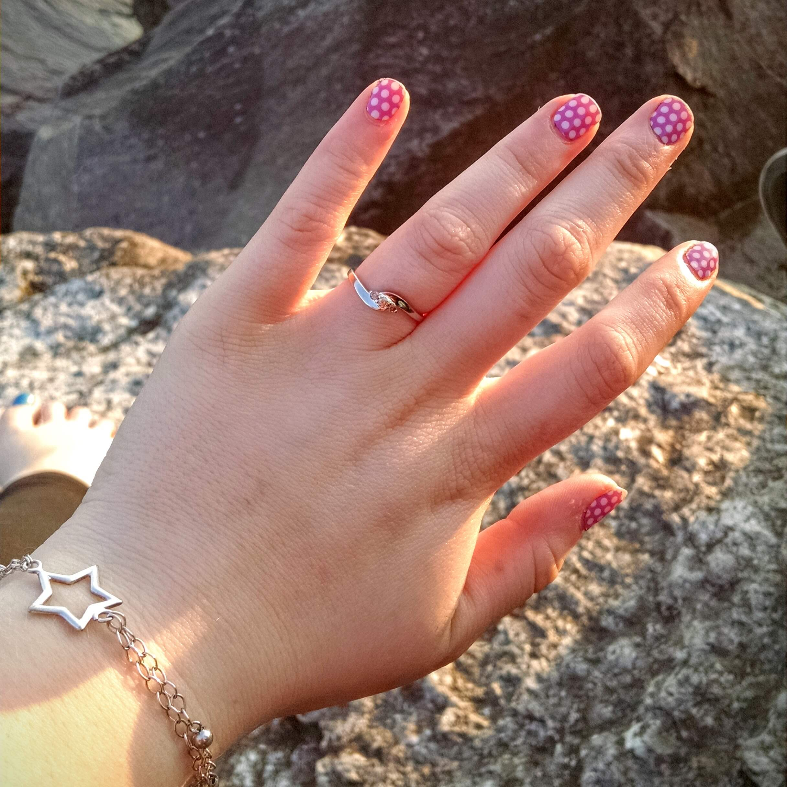
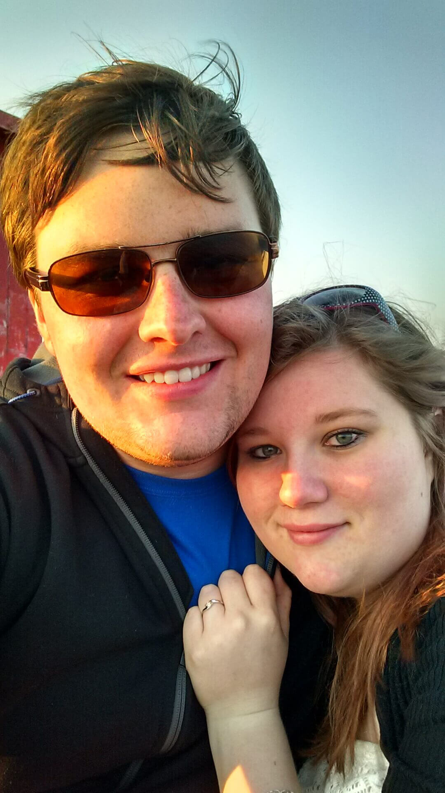

The Proposal
A short story of the events leading up to the engagement of David Fisher Evans and Elissa Starr Steinman, written by Lisa.
Setting the Scene
Our vacation plans were getting shuffled around left and right. I had made up the perfect daily itinerary for our time in Michigan but I was quickly finding that it had all been in vain. The weather wasn't right for the amusement park, Grandma was now in the hospital, the museum was closed in the middle of the week... I was frustrated to say the least. But as usual, Fisher kept me calm. He coaxed me through refiguring our plans and my Sister-in-Law, Tasha helped me decide how to shuffle it all around - Monday had to flip-flop with Wednesday, Tuesday morning had to flip-flop with the evening. It would work out one way or another so we could still fit everything in. The one thing I didn't know how to do was de-stress. So I was trying my best to take it moment by moment and just enjoy myself.
Tuesday was supposed to be movie-night with Mike and Tasha. We had originally planned to go out to the theater and I had thought maybe dinner or something somewhere would be nice. I had even planned my outfit far in advance - but it was just another thing planned out in vain. We all unanimously agreed we would rather stay in and play board games and hang out instead. But... what a waste of a nice date-night outfit! I had even brought my knee-high boots just for this one occasion and now they wouldn't even come out of my suitcase. I sighed an "Oh well," and wore the outfit with flip-flops. A dressy-casual outfit would be just as nice to visit Grandma in the hospital in, I had decided, and Fisher and I were going to walk the Pier out to the lighthouse on Lake Michigan after, so I guess it would still be kind of date-night-ish.
Moments Before
Our visit to Grandma was nice. We got to sit with her for almost 2 hours just chit-chatting and catching up. We got to talking about my brother, Mike and his wife, Tasha and their expected baby boy on his way. We started talking about being in a relationship, and how Fisher and I have been doing. I told Grandma it's silly, but I tell Fisher all the time that he reminds me of my Grandpa Pitcl in his personality. Grandma told us the story of how the two of them met when they were 16 and how persistent Grandpa had been to date her. It was so much fun listening to her share the stories of how they started and how in love they had been. He had always been so good to her and you can still see the gleam in her eye when she remembers him. While I was growing up, I had always modeled a good relationship on theirs... Grandma asked how long Fisher and I have been "going together," and when I said about two years, she smiled and said "Well, me and Grandpa went together for about three years before we got married.. so that's okay, you got about a year yet," and she laughed a little. We said our goodbyes and hugs. Next stop was the Lake before it got too dark. The sun would start setting soon.
We were both a little hungry. We hadn't eaten almost all day, so we wanted to grab something quick to take to lake with us. I suggested we stop at G&L since I haven't had them for years and he hasn't had them ever.. and a hot dog sounded as good a quick meal as any. So after a quick pit-stop through their drive-thru, we arrived at the lake. We grabbed a picnic table and ate our messy chili-cheese hotdogs.
The Big Q
The wind was pretty crazy and the lowering sun was leaving the air colder. We headed toward the lighthouse, just talking about our favorite parts of the trip so far and commenting on the waves of the lake. When we got to the lighthouse there was already a couple sitting on the one seat available. There was a deep puddle spread across the walkway from the wind ripping up the waves and splashing against the rocks there. We stood and hugged and watched the sun beginning to set over the lake. The wind was really cold and my flip-flops wouldn't be easy to walk in if I stood in the puddles, so I decided to find a seat. Some of the rocks closer to us were tall enough not to be splashed by the water breaking in front of them, so I took my sandals off and hopped on a huge boulder waiting for Fisher to follow suit. Without question, he smiled and followed along on to the rock. We sat and he held me in his arms to protect me from the cold wind. We played a "High Point/Low point" of our day so far as we watched the waves crash in front of us.
Then, Fisher took his arm off from around my shoulder, and was reaching in his pocket. I pretty much ignored it, because he keeps his chapstick or tissues in his pockets, so I didn't think anything of it. I kept staring out at the lake, thinking how it looks identical to the ocean.. and he said "So, what do you think?"
"What do I think about what?"
He tapped my arm a little, and when I look over, there is a gorgeous blue box with Alice on the top, and he said "Want to make it official, and get married?"
I was beaming! I couldn't do anything but smile, I was so surprised and excited and giddy and elated and overjoyed and shocked and excited and happy and excited and so OH MY GOD!!!!!!
Fisher handed me the box and told me to open it, and inside was a gorgeously perfect ring tied with a white bow. The inside of the box read our little personal sayings that we write to each other in little notes all the time. I was hugging him and kissing him and giggling.
Notice the missing 'H'? More on that later...
He said Are you going to answer?" Which made me laugh more and I hugged him and kissed him more and he pressed again, "Well...?"
"Yes!" I exclaimed "Yes, yes and yes!!"
The actual proposal happened at ~8:55pm on the Pere Marquette Park Pier in Muskegon, Michigan on Tuesday, June 30th, 2015.